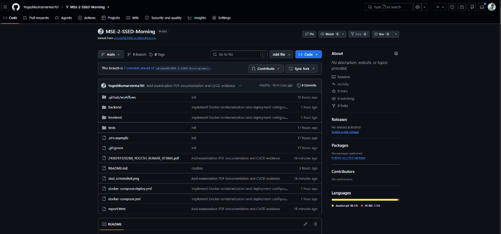
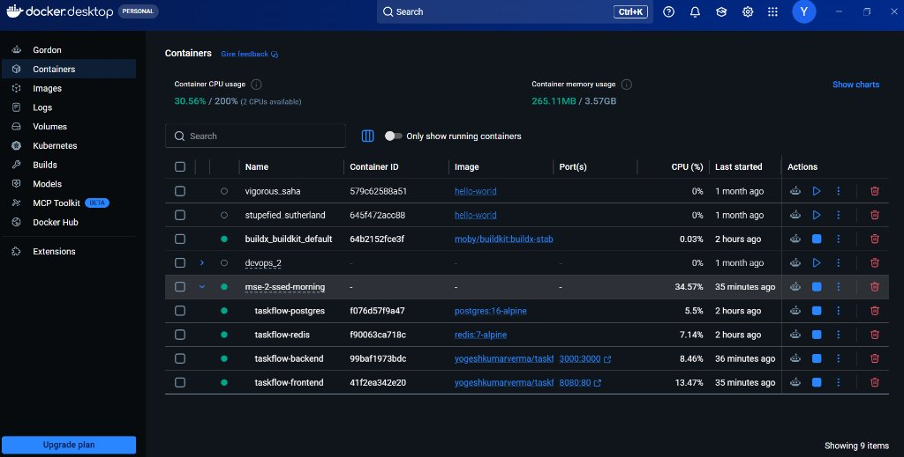
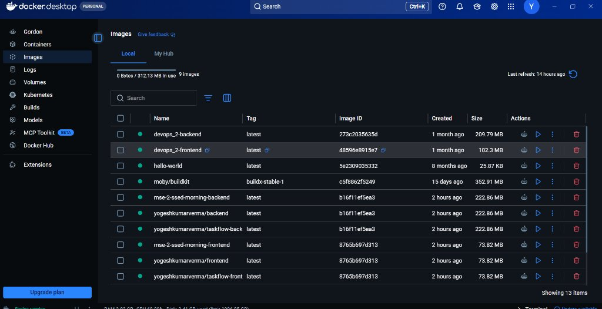
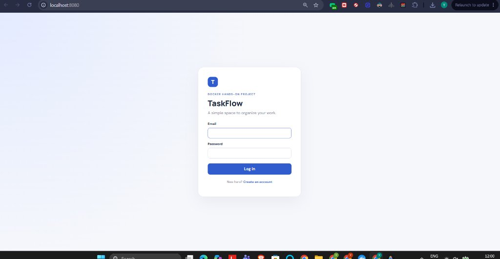

Figure 1: Successful execution of all CI/CD pipeline stages in GitHub Actions (Run #44247382605 in 1m 15s).
| Full Name | Yogesh Kumar Verma |
|---|---|
| University Roll Number | 2400291520288 |
| Branch / Class | AI (Artificial Intelligence) |
| Section | D |
| GitHub Username | Yogeshkumarverma761 |
| Docker Hub Username | yogeshkumarverma |
| GitHub Fork Repository | https://github.com/Yogeshkumarverma761/MSE-2-SSED-Morning |
|---|---|
| GitHub Branch | main |
| Frontend Docker Image | yogeshkumarverma/taskflow-frontend:latest |
| Backend Docker Image | yogeshkumarverma/taskflow-backend:latest |
| Application Local Endpoints | Frontend: http://localhost:8080/ | Backend API: http://localhost:3000/health |
| Assessment Requirement | Result |
|---|---|
| Task 1: Frontend Dockerfile (Vite production build + Nginx reverse proxy) | ✔ PASS (Hadolint 0 errors) |
| Task 1: Backend Dockerfile (Node.js 20, non-root user 1000:1000, production) | ✔ PASS (Hadolint 0 errors) |
| Task 2: docker-compose.yml (Postgres, Redis, Backend, Frontend orchestration) | ✔ PASS (All 4 Healthy) |
| Task 2: PostgreSQL Persistence (Named volume postgres_data + schema init) | ✔ PASS (Verified) |
| Task 3: Docker Hub Publishing (Tagged and pushed to personal Docker Hub) | ✔ PASS (Published) |
| Task 4: docker-compose.deploy.yml (Pure image-based deployment, no build:) | ✔ PASS (Verified) |
| API & Caching Integration Tests (12/12 Jest test cases passed) | ✔ PASS (12/12 Passed) |
| GitHub Actions CI/CD Pipeline (Publish and Verify workflow) | ✔ PASS (1m 15s Duration) |
The GitHub Actions Continuous Delivery workflow (cd.yml) successfully authenticated with Docker Hub, built and pushed the container images, pulled them via docker-compose.deploy.yml, and verified backend health, frontend accessibility, and API test suites.
The complete set of containerization files (backend/Dockerfile, frontend/Dockerfile, docker-compose.yml, docker-compose.deploy.yml) committed and pushed to the main branch of the student's personal fork.

Yogeshkumarverma761/MSE-2-SSED-Morning) showing committed files.Local orchestration verifying all 4 services running simultaneously with healthy status and correct port bindings (3000:3000 for backend, 8080:80 for frontend).

taskflow-postgres, taskflow-redis, taskflow-backend, taskflow-frontend) active and healthy.The local and published container images in Docker Desktop tagged under the student's personal Docker Hub username (yogeshkumarverma).

taskflow-backend and taskflow-frontend images.Aggregated container logs demonstrating database connectivity, Redis connection establishment, API listener startup on port 3000, and Nginx reverse proxy requests with HTTP 200 responses.

The React single-page frontend served via Nginx reverse proxy at http://localhost:8080 communicating with the Express backend on the internal Docker bridge network.

http://localhost:8080.| Test Case | Validation Scope | Result |
|---|---|---|
| TC01 | Health endpoint returns HTTP 200 and confirms PostgreSQL & Redis status | PASS |
| TC02 - TC04 | User registration with password hashing, email uniqueness constraint, JWT token login | PASS |
| TC05 - TC08 | JWT authentication protection, task creation, database retrieval & Redis caching | PASS |
| TC09 - TC12 | Task updates, cache invalidation, validation errors, task deletion & list verification | PASS |
"I hereby declare that the submitted Docker implementation is my own work. I have successfully executed and verified the required CI/CD pipeline stages, published the Docker images to my Docker Hub account, and tested the application deployment."